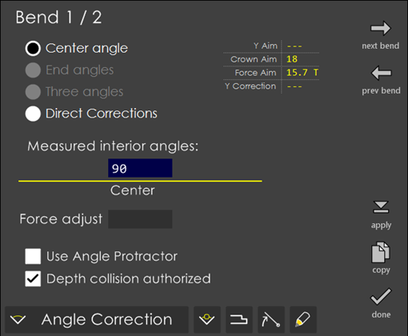
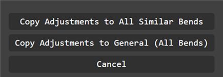
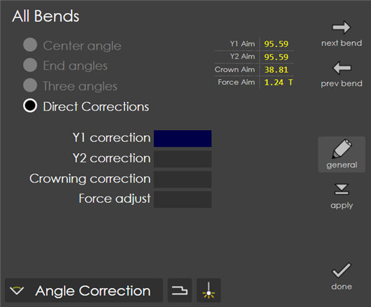

Corrections
The sheet metals used in the workshops hardly ever has their nominal thickness. The real thickness commonly varies ±10% from the nominal value. Also, the variation is not constant across the whole length of the sheet. The thickness on the left side can be different from the thickness on the right side (sheets with a trapezoidal section). Also, after having made a bend, if the angle intended is not obtained you need to make some tweaks to ensure that the angle originally intended is achieved. To correct such types of errors from affecting the final product you provide the machine with corrections which are provided in this page. There are four types of corrections defined which as detailed below.
Angle Correction
After having made a bend, the operator measures the angle obtained. The measured angular value is entered in the Angle field. Suppose, you want an interior angle of 135°, you make a bend and obtain a wide angle which measures 138°. Now, you just enter 138° in this field. Variants of this method allow you to enter two or three measures. automatically calculates the correction to obtain the angle originally programmed. If after making the corrected bend, the angle is still not correct, simply enter the new measured angle value(s). Corrections obtained with this method sum up. Typically, the situation converges very quickly, say after one or two iterations.
Center angle:
When selected, this option provides a Center input box for entering the Measured interior angle. You simply measure the resulting angle and enter the exact value in this field, RightAngle automatically computes a correction in BDC target and applies it to both Y1 and Y2.

End angles:
Selecting this mode, allows you to enter the Left and Right angles under the Measured interior angles field. In this case, you measure the resulting angle near each extremity. As a result, ca different correction is computed in BDC target separately for Y1 and Y2, considering the bend position along the bed and its outer width. This is only possible when the bend width is 10% of the bed length. With shorter widths, slight differences in measured left and right angles might result in much larger difference in Y1 and Y2 corrections leading to an excessive ram tilt.
Three angles:
In this mode, you can enter the Left, Center and Right angles under the Measured interior angles field. Here, you measure the resulting angle in the middle and near each extremity, thereby computing a different correction in BDC target separately for Y1 and Y2 and a correction in target position for the crowning device. The three corrections are computed in a consistent way, considering the mutual influence of crowning on punch penetration depending on the position of the bend along the bed and its outer width. For instance, a large positive increase in crowning will lead to a surprisingly positive correction to Y1 and Y2. This method is only possible when bend width is at least 10% of bend length. Note that with shorter widths, slight differences in measured left and right angles might result in much larger difference in Y1 and Y2 corrections, leading to an excessive ram tilt.
Direct corrections:
When you choose this option, the Y1 correction, Y2 correction and Crowning correction fields are displayed. You simply enter a value in the required field for correction. If the correction concerns the two sides of the beam, the same value for Y1 and Y2 must be entered. You can alter the crowning correction using the same principle.
|
Note
|
Direct corrections do not sum up. They simply replace the existing corrections. |
Force adjust:
The value entered in this field is added to the precomputed bending force (tonnage) needed for the bend. If the resulting total force is greater than the tools limit, a warning is issued.
Depth collision authorized:
In certain bends, it is foreseen that the punch will push the material against the die’s V bottom or against its inner walls, which is named as Depth Collision. Some tools support this, while others do not. By turning on this field, you force the system to accept the collision. Bases its computation on a theoretical geometry of the tools and the material under pressure that might be slightly different from the reality. Therefore, in the actual case, the collision might be a near miss. Also, the tools might be sufficiently robust for a slight contact but not sufficiently to be qualified as robust enough for all cases. Finally, such a warning also makes it explicit that the bend will not be a so-called air-bend, as probably expected by the operator. Instead, it will be a variant of bottoming bends, which require a slightly different cycle. For these reasons, operator must be warned of a possible problem and has thus the possibility to give her permission, assuming the responsibility of any damage to tools.
Gauge Correction
In this page, you can correct the target position of each back-gauge finger, in order to correct the resulting flange length. Do not use this to select an entirely new gauging point. For each BG finger, you can correct the target along three classical directions: X, R and Z.
X: Positive or negative correction along the X direction. To set the BG fingers at a greater distance from the tools, enter a positive value.
Z: Positive or negative correction along the Z direction. To set the BG fingers further on the right, towards the Y2 cylinder, enter a positive value.
R: Positive or negative correction along the R direction. To further lift the BG fingers, enter a positive value.
Retraction: In certain situations, it is necessary to disengage the back gauge during bending. The retraction value is a relative value usually positive, implying that the gauge moves away from the die. If a negative value is programmed, this allows to execute a negative retraction, that is a displacement towards the die. Operator can modify the value automatically computed by the system. Note that the value entered in this field represents the actual distance moved, not a correction to be added to previously computed values, as for X, R and Z corrections above.
|
Note
|
A retraction value of 0 (default value) means "no retraction and no ram stop at pinch point". |
|
Note
|
A retraction value of 0.001 means "no retraction, ram will briefly stop at pinch point". |
|
Note
|
When some value is given for retraction it means that "ram stops at pinch point, retraction is performed, ram resumes descent". Depending on how the machine parameters have been set, ram can also resume descent before the retraction is finished. It could even immediately resume descent as soon as the retraction has just started. |
Once the corrections are entered, use the Apply button to apply the corrections to the bend. In certain cases, you might want these corrections to be applied globally on all the bends (say for example in a part with 10 bends) rather than applying the correction on each bend. To facilitate such cases, use the copy option that provides. First apply the corrections that you have done to the current bend. Then press copy to copy the corrections to the other bends. A dialog (see picture below) asking whether to copy the corrections to other bends comes up. Press any option to copy and press cancel to cancel the operation.

In the case of angle correction, the adjustments are copied only to same-angle bends (you can see the Y1 correction and Y2 corrections fields getting copied over).
Another way to apply correction to all bends is by pressing general, which will go to general mode. Correction entered, in general mode, will be applied to all the bends.
